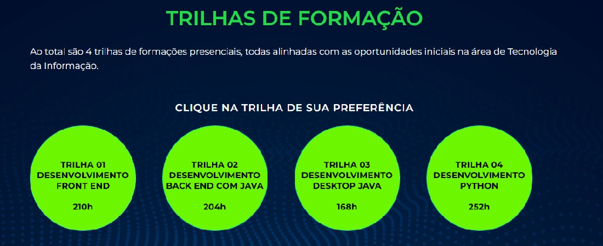

<!-- Utilizado para definir que este documento segue as regras de sintaxe do HTML 5 -->
<!DOCTYPE html>

<!DOCTYPE html>
<html lang="pt-br">

<head>
	<meta charset="UTF-8">
	<meta name="viewport" content="width=device-width, initial-scale=1.0">
	<link rel="stylesheet" type="text/css" href="../css/estilogeral.css" />
	<link rel="stylesheet" type="text/css" href="../css/stylersti.css" />
	<link rel="shotcut icon" type="image/x-icon" href="../imagens/senac.ico" />

	<title>Programa RS TI</title>
</head>

</html>

<link rel="stylesheet" href="style.css">
<html lang="pt-br">

<body>
	<!-- Conteúdo que vai ser colocado na página-->
	<!--Centralizar tag-->
	<h1>Programa RS Tecnologia da Informação</h1>

	<h2><a href="../index.html">Página Inicial</a></h2>
	<h2>
		<a href="Cursos.html">| Cursos |</a>
		<a href="informações.html">Informações |</a>
		<a href="faleconosco.html">Fale Conosco |</a>
	</h2>
	<br>
	<hr>
	<p>
		
	<h1>Sobre o Programa</h1>
	O Programa RS TI foi desenvolvido pelo Senac-RS com o objetivo de capacitar pessoas para atuarem no mercado de
	Tecnologia da Informação do Rio Grande do Sul, a fim de desenvolver habilidades técnicas necessárias para
	atuação como Desenvolvedores de Software.
	<br>
	O Programa RS TI oferece o benefício de conectar os profissionais capacitados nas trilhas de formação às
	oportunidades de trabalho ofertadas pelas empresas parceiras. Dessa forma, apresentamos esta plataforma, a qual
	irá aproximar esses públicos em diversas localidades do Rio Grande do Sul.
	<hr>
	<h1>Objetivos</h1>
	Capacitar pessoas para atuarem no mercado de Tecnologia da Informação do Rio Grande do Sul, a fim de desenvolver
	habilidades técnicas necessárias para atuação como Desenvolvedores de Software.
	<hr>
	</p>
	<p>
		<center> 
		</center>
	<h1>Nossa Atuação</h1>
	O Senac-RS atua há 75 anos na capacitação de profissionais para atuação no mercado de trabalho. Acompanhou a
	evolução das tecnologias ao longo do tempo, ofertando cursos atualizados e adequados às demandas das
	empresas do
	setor de comércio de bens, serviços e turismo. Ao longo dos últimos 5 anos, mais de 26 mil alunos foram
	capacitadas pelo Senac-RS, na área de Tecnologia da Informação, proporcionando a qualificação do setor.
	<hr>
	</p>
	<br>
	<center> 
	</center>
	<hr>
	<br>
	<style>
		table {
			border-collapse: collapse;
		}

		td {
			border: 1px solid black;
			padding: 10px;
		}
	</style>

	<table>
		<tr>
			<td>
				<h2>Trilha 01
					&bull;Desenvolvimento Front End - 210h<br>
					&bull;Lógica de Programação - 60h<br>
					&bull;Desenvolvimento Web Front-end - 114h<br>
					&bull;Javascript - 36h</h2>
				O profissional formado nesta trilha está apto a concorrer em seleções de perfis iniciais de atuação
				na área de TI. O participante tem conhecimentos amplo em HTML 5, CSS 3 e na linguagem de programação
				JavaScript, sendo capaz de analisar, planejar, desenvolver e testar páginas web responsivas, levando
				em consideração os conceitos e boas práticas relacionados ao design de Interface do Usuário (UI) e
				Experiência do Usuário (UX). Este profissional pode atuar como Web Designer, Desenvolvedor
				Front-end, UI/UX Designer, Testador de Software, em nível inicial.
			</td>
			<td>
				<h2>Trilha 02<br>
					&bull;Desenvolvimento Back End com JAVA - 204h
					&bull;Lógica de Programação - 60h<br>
					&bull;HTML e CSS Criação de Websites - 36h<br>
					&bull;Programação Java Back End - 108h</h2>
				O profissional formado nesta trilha está apto a concorrer em seleções de perfis iniciais de atuação
				na área de TI. O participante tem conhecimento em Banco de dados, SQL, HTML 5, CSS 3 e na linguagem
				de programação Java, sendo capaz de analisar, planejar, desenvolver e testar aplicações e serviços
				web em Java e também integra-los ao Banco de Dados. Este profissional pode atuar como Desenvolvedor
				Back-end, Testador de Software, Programador Java, em nível inicial.

			</td>
		</tr>
		<tr>
			<td>
				<h2>Trilha 03<br>
					&bull;Desenvolvimento Desktop JAVA - 168h<br>
					&bull;Lógica de Programação - 60h<br>
					&bull;Programação Java Desktop - 108h</h2>
				O profissional formado nesta trilha está apto a concorrer em seleções de perfis iniciais de atuação
				na área de TI. O participante tem conhecimentos em Banco de dados, SQL e na linguagem de programação
				Java, sendo capaz de analisar, planejar, desenvolver e testar aplicações desktop em Java e também
				integra-lo ao Banco de Dados. Este profissional pode atuar como Desenvolvedor de Software, Testador
				de Software, Programador Java, em nível inicial.

			</td>
			<td>
				<h2>Trilha 04<br>
					&bull;Desenvolvimento Python - 252h<br>
					&bull;Lógica de Programação - 60h<br>
					&bull;Formação Python - 156h<br>
					&bull;Desenvolvimento de Websites com Django - 36h</h2>
				O profissional formado nesta trilha está apto a concorrer em seleções de perfis iniciais de atuação
				na área de TI. O participante tem conhecimentos em Banco de dados, SQL, HTML 5, CSS 3, na linguagem
				de programação Python e no framework Django, sendo capaz de analisar, planejar, desenvolver e testar
				aplicações desktop com interface gráfica e aplicações e web desenvolvidas em Python e também
				aplicações web desenvolvidas usando o framework Django. Este profissional pode atuar como
				Desenvolvedor Back-end, Desenvolvedor Front-end, Programador Full Stack, Programador Python,
				Testador de Software, em nível inicial.
			</td>
		</tr>
	</table>
	<hr>
	<a href="https://senacprogramarsti.com.br">
		
	</a>
	<br>
	<a href="https://www.senacrs.com.br/hotsite/psg/index.html#/consulta-de-vagas">
		
	</a>
	</p>

</body>

</html>